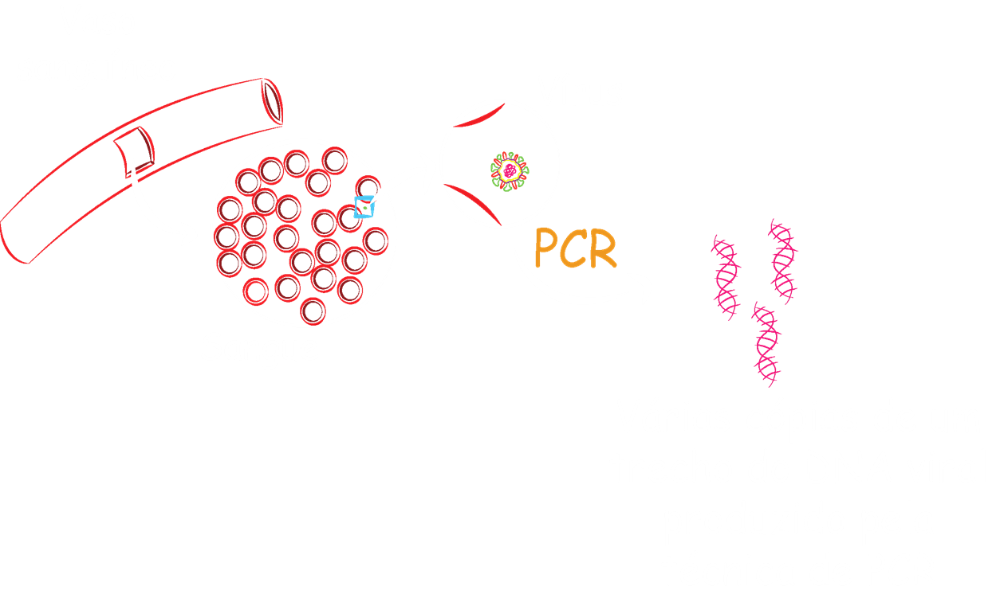
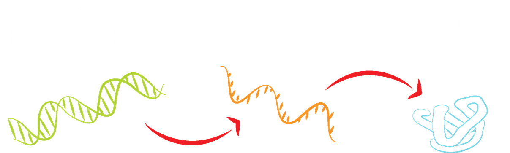
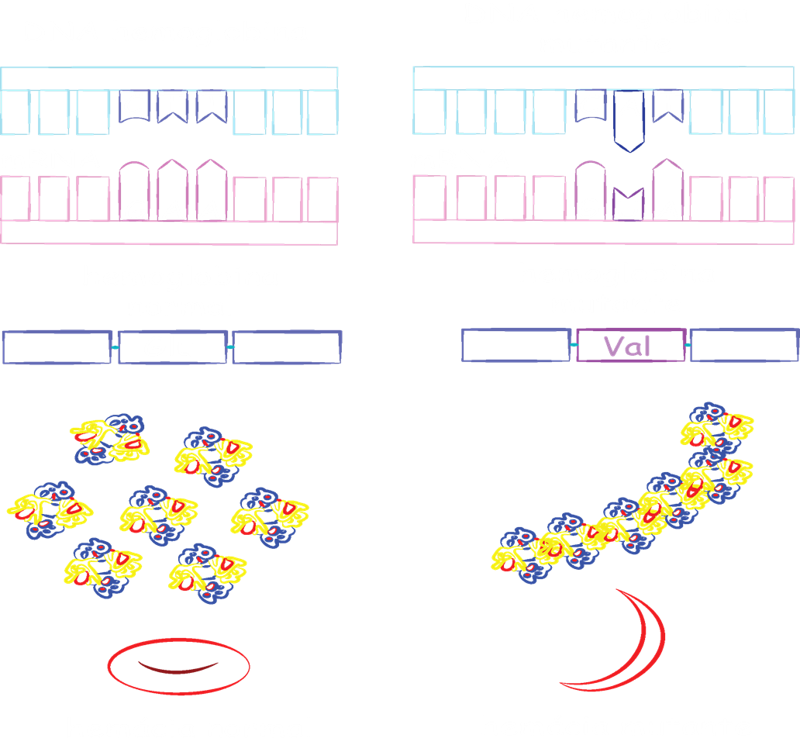
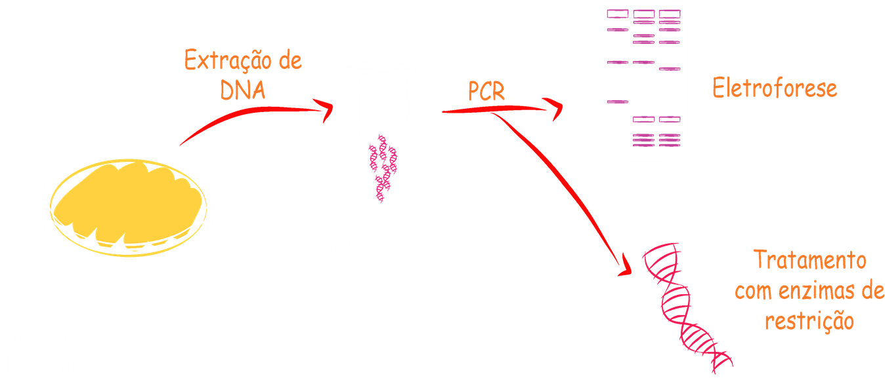

Qualquer método diagnóstico pretende obter e analisar dados para avaliar problemas variados. A realização de diagnósticos utilizando métodos moleculares permite, por exemplo, detectar alterações genéticas que podem estar associadas a determinadas doenças hereditárias ou identificação de pedaços ácidos nucleicos de patógenos causadores de doenças infecciosas.
No caso de doenças causadas por algum patógeno -- por exemplo, vírus, bactérias, etc --, a técnica de PCR pode ser utilizada para identificar a presença dos ácidos nucleicos (DNA ou RNA) desses invasores no nosso organismo!! Vou desenhar na lousa pra vocês verem

No caso da detecção de doenças hereditárias, o que se procura é identificar alterações genéticas (mutações!!!) que existem no nosso genoma e que são sabidamente relacionadas à determinadas doenças que são observadas em famílias.
Essas mutações ocorrem naturalmente ou podem ser provocadas por agentes mutagênicos, como raios solares ultravioletas e produtos químicos utilizados em diversos processos industriais.
Como é no nosso DNA que está a “receita” para a produção de todas as proteínas que necessitamos para viver -- o tal “dogma central da genética”!! -- quando uma delas não funciona direito, porque há algo errado com a “receita”, diríamos que... “dá pau no sistema”...
“dogma central da genética”

Veja só o que acontece quando apenas um único nucleotídeo é alterado na sequência de DNA que tem a “receita” para produzir a hemoglobina, proteína que encontramos dentro das nossas hemácias e que carregam o oxigênio que chega aos nossos pulmões pelo corpo todo!

A anemia falciforme, disfunção grave causada pela mutação comentada anteriormente, é uma das doenças genéticas identificadas no famoso “teste do pezinho”. Este teste é feito em todos os bebês a partir do 3o dia de vida e faz parte do Programa de Triagem Neonatal instituído pelo Governo Brasileiro.
Este programa ajuda a identificar uma série de doenças genéticas e infecciosas precocemente aumentando as chances de tratamento e desenvolvimento normal de crianças afetadas por essas doenças. Algumas delas, como a própria anemia falciforme, podem ser identificadas pela aplicação de técnicas moleculares.
O desenvolvimento do diagnóstico molecular foi possível graças à nossa capacidade de obter, identificar, multiplicar, cortar e quantificar de ácidos nucléicos (DNA/RNA). O domínio dessas técnicas causou revolução nas ciências biológicas e na própria sociedade!


Atualmente, diagnósticos moleculares são usados principalmente na detecção de doenças hereditárias, identificação e quantificação de patógenos e testes de paternidade. Tais análises auxiliam o diagnóstico e prognóstico de doenças infecciosas e genéticas, além de resolver questões familiares.